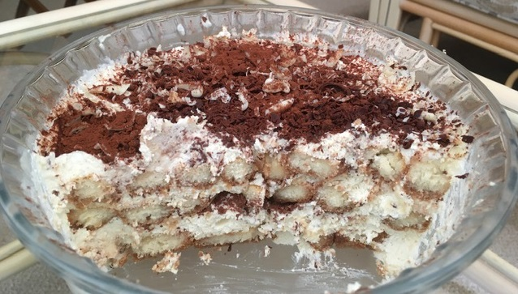

Teramesu
Ingredients:
-
Silken Tofu
-
150g of Coconut Milk (put in the fridge the night before)
-
2 tbsp of Sugar
-
Lady Fingers
-
1/2 Cup of Cocoa Drink or Coffee
-
Amaretto (alcohol)
-
Creme Freche
-
Double Creme (lacto-free)
-
To Decorate: Sprinkle White and Dark Chocolate

Method:
-
Take the coconut milk out of the fridge and make the cocoa or coffee drink.
-
Take two bowls, drain the silken tofu and put into 1 bowl.
-
Scoop off the creamy part of the coconut milk on the top and put it with the tofu.
-
Take the creme freche and put it in the same bowl.
-
Use a blender or a mixer to blend the mixture together until comletely smooth.
-
In the seperate bowl, whip the double cream for a couple of minutes and add 1 tbsp of sugar. Then
whip it until it forms soft peaks.
-
Mix both mixtures together with a spoon.
-
Cover the bottom of your teramesu dish with the lady fingers dipped in the cocoa or coffee drink.
-
Then cover the lady fingers with a layer of the cream mixture.
-
With a potato peeler, peel some chocolate to cover the first layer.
-
Add more layers of lady fingers and cream, finishing with the cream and sprinkle with chocolate or
dust with cocoa powder.
-
Refrigerate for at leat 7-8 hours.